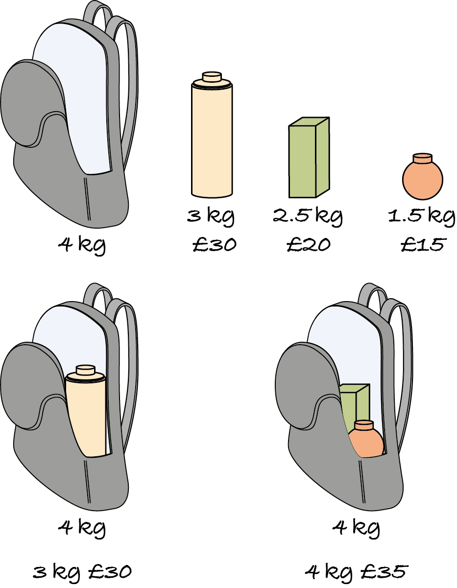

18. Greed
Consider again the 0/1 knapsack problem: given the weights and values of a set of items, we want a most valuable subset of items we can pack in the knapsack, without exceeding its weight capacity. We solved this optimisation problem with an exhaustive search that generates all possible subsets and, for each one, checks if it fits the knapsack and has the largest value found so far.
An alternative approach is to start with an empty knapsack and keep adding the most valuable remaining item that still fits in the knapsack. This algorithm is highly efficient: it sorts the items by descending value in log-linear time and then goes through them in linear time. Each item is either put in the knapsack or skipped, because its weight exceeds the remaining capacity of the knapsack. Contrast this with the exhaustive search, which generates and tests an exponential number of subsets.
There’s a snag, however. The second algorithm isn’t correct: it doesn’t generate a solution for some inputs as the following counter-example shows. The most valuable item is the heaviest. Choosing it won’t leave space for anything else. Instead, the two cheaper items form the most valuable subset.
An algorithm that incrementally constructs the solution by always choosing the best available option, for some notion of ‘best’, is a greedy algorithm. As in real life, greed is often not a good approach. Greedy algorithms solve optimisation problems by choosing a local optimum at each step, in the hope of reaching a global optimum. For many problems, this doesn’t happen.
However, when it does work, greed is an excellent approach. Greedy algorithms don’t revisit the choices made, they simply ‘press ahead’, so they’re iterative, simple and efficient. Even when they don’t provide a correct solution, they can be used as heuristic algorithms that quickly compute an approximation of the solution.
This chapter explains how to design greedy algorithms, shows problems for which they do compute the correct solution and problems for which they don’t, with tips for finding counter-examples that show that a greedy algorithm is incorrect.
This chapter also introduces weighted graphs, in which edges have numbers to indicate the distance, cost or time needed to traverse them. Such graphs will be used to illustrate two greedy graph algorithms.
The examples and exercises in this chapter support the usual learning outcomes.
Understand the common general-purpose data structures, algorithmic techniques and complexity classes – you will learn about weighted graphs and greedy algorithms.
Explain how an algorithm or data structure works, in order to communicate with relevant stakeholders – you will learn how to find counter-examples to prove a greedy algorithm doesn’t work.
Write readable, tested, documented and efficient Python code – this chapter introduces classes for weighted graphs.
Before starting to work on this chapter, check the M269 news and errata, and check the TMAs for what is assessed.